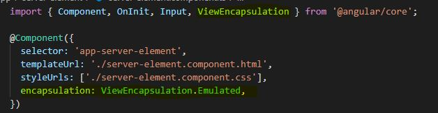

09 - View Encapsulation
CSS Styles, by default, do not go outside the component where the CSS is
located. However, with decorators @Input and @Output you will transfer the
data to other components, and you would assume the styles would come along
with them. They do not.
-
Emulated - The natural state of Angular. CSS Styles only
apply within its own component
-
None - If selected, all CSS in this component will become
global for use in the entire project.
-
Native - Same result as emulated, but for use with browsers
that use the ShadowDom technology.
